Cinema Player operator manual Cinema Player Bedienungsanleitung
Cinema Player is not an ordinary media player. It is built to run a complete cinema programme, with the booth on its own monitor and only the show on the screen.
Der Cinema Player ist kein gewöhnlicher Mediaplayer, sondern bietet Funktionen, um einen kompletten Programmablauf in einer Kinoumgebung steuern zu können.
1. Introduction 1. Einleitung
The aim of the Cinema-Player is a clean cinema experience for the audience and less work for the projectionist. Control stays on a dedicated monitor. The screen shows only the programme. While no film or still is showing, the screen stays dark.
Ziel des Cinema-Players ist es, ein perfektes Kinoerlebnis für das Publikum zu bieten und gleichzeitig den Vorführer zu entlasten. Die Steuerung erfolgt über einen eigenen Monitor, während auf der Leinwand ausschließlich der Programminhalt zu sehen ist. Solange kein Film oder Bild gezeigt wird, bleibt die Leinwand dunkel.
Clip metadata is compared with what the projector can do, and mismatches are marked. That keeps the wrong frame rate from causing judder. The values stay on screen so the booth always has an overview of the clips and the running programme.
Die Metadaten der Filme und die Möglichkeiten des Beamers werden verglichen und Inkompatibilitäten markiert. So wird verhindert, dass es durch falsche Bildraten zu einer ruckelnden Wiedergabe kommt. Alle Werte werden dargestellt, um immer einen Überblick über die Filme und das laufende Programm zu haben.
2. Beamer status 2. Beamerstatus
Cinema Player drives the graphics-card output to the projector so the mode matches the clip. That avoids judder during playback.
Der Cinema Player steuert den Ausgang zum Beamer der Grafikkarte so, dass immer die passenden Einstellungen zum jeweiligen Film vorliegen. Damit wird vermieden, dass es bei der Wiedergabe zu ruckelnden Bildern kommt.
The HDMI handshake between Cinema Player and the projector happens as soon as the program pointer jumps to a clip. When that clip starts, picture and sound reach the auditorium without delay.
Das HDMI-Handshake zwischen Cinema Player und Beamer erfolgt, sobald der Programmzeiger auf einen Film springt. Wird der Film gestartet, kommt Bild und Ton ohne Verzögerung im Kinosaal an.
The box opens in a short form: the set resolution, frame rate and colour space, plus the status. A downward arrow at the bottom opens the full readout and closes it again.
Der Kasten öffnet sich in kurzer Form: die eingestellte Auflösung, die Bildrate, der Farbraum und der Status. Ein Pfeil nach unten am unteren Rand öffnet die vollständige Anzeige und schließt sie wieder.
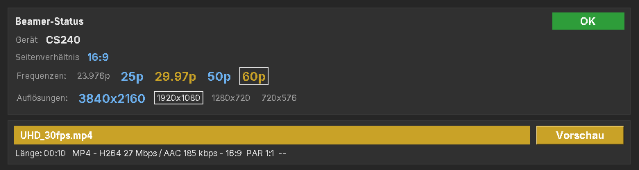
The important fields of the projector’s Extended Display Identification Data (EDID) are read and shown. They are compared with the clip metadata.
Die wichtigsten Daten des Extended Display Identification Data (EDID) des Beamers werden ausgelesen und angezeigt. Die Werte werden mit den Metadaten der Filme verglichen.
If the clip can play with the projector’s native modes, a green OK sits at the top right. If there is a problem, red Mismatch is shown. While a clip is on air, HW decode shows mpv’s current hardware decoder (hwdec-current). Drop frames splits the counters: mpv is frames skipped at display (frame-drop-count), decoder is frames skipped in the decoder (decoder-frame-drop-count). If any frames are dropped, the badge turns red Dropped instead of OK.
Kann ein Film mit nativen Einstellungen des Beamers gezeigt werden, ist rechts oben ein grünes OK zu sehen. Bei einem Problem wird Abweichung in rot gezeigt. Während der Wiedergabe zeigt HW-Dekodierung den aktuellen Hardware-Decoder von mpv (hwdec-current). Bei Dropframes steht mpv für Bilder, die der Player bei der Ausgabe überspringt (frame-drop-count), und Decoder für Bilder, die der Decoder nicht schafft (decoder-frame-drop-count). Werden Bilder verworfen, steht statt OK rot Dropped.
The complete EDID record is under Settings → Beamer output → EDID.
Der komplette EDID-Datensatz kann in den Einstellungen unter Einstellungen → Beamerausgang → EDID abgerufen werden.
Playback options that belong to the clip under the program pointer are marked blue. If a clip is loaded in preview, the matching values are yellow.
Die theoretisch möglichen Wiedergabeoptionen des aktuellen Films, auf dem der Programmzeiger steht, sind blau markiert. Ist ein Film als Vorschau gewählt, werden die entsprechenden Werte gelb dargestellt.
Values that have been negotiated and set on the projector have a border.
Die Werte, die mit dem Beamer ausgehandelt und eingestellt sind, werden umrandet.
3. Control window 3. Bedienoberfläche
The control window is fully separate from the projection and sits on its own monitor. It is split into two main areas.
Die Bedienoberfläche ist vollständig von der Projektion getrennt und wird auf einem eigenen Monitor angezeigt. Sie ist in zwei Hauptbereiche aufgeteilt.
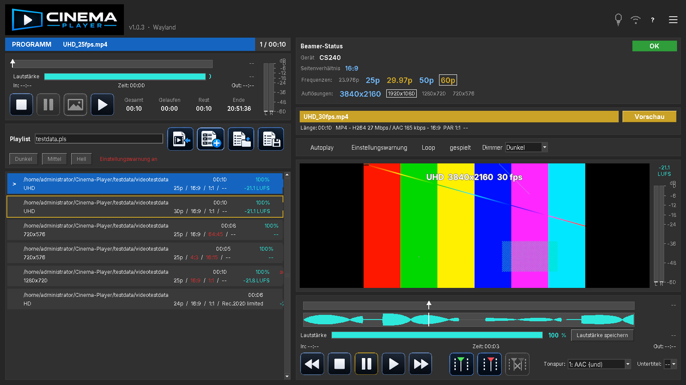
4. Playlist 4. Playlist
The playlist is the centre of Cinema Player: the running order is assembled and edited here. All important information and settings — including measured loudness and audio envelopes — live on the playlist and are saved with it.
Die Playlist ist das zentrale Element im Cinema Player, in dem der Programmablauf zusammengestellt und bearbeitet wird. Alle wichtigen Informationen und Einstellungen, bis zu den berechneten Lautheitswerten und Audio-Hüllkurven, sind in der Playlist enthalten und werden mit ihr gespeichert.
A programme can be prepared in advance, clips can be edited, and the finished list is simply loaded for the event.
So lässt sich ein Programmablauf im Vorhinein zusammenstellen, die Filme bearbeiten und die fertige Zusammenstellung bei der Veranstaltung einfach laden.
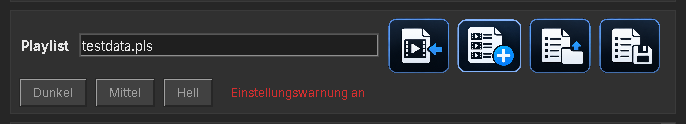
Import films and stills
Filme und Bilder importieren
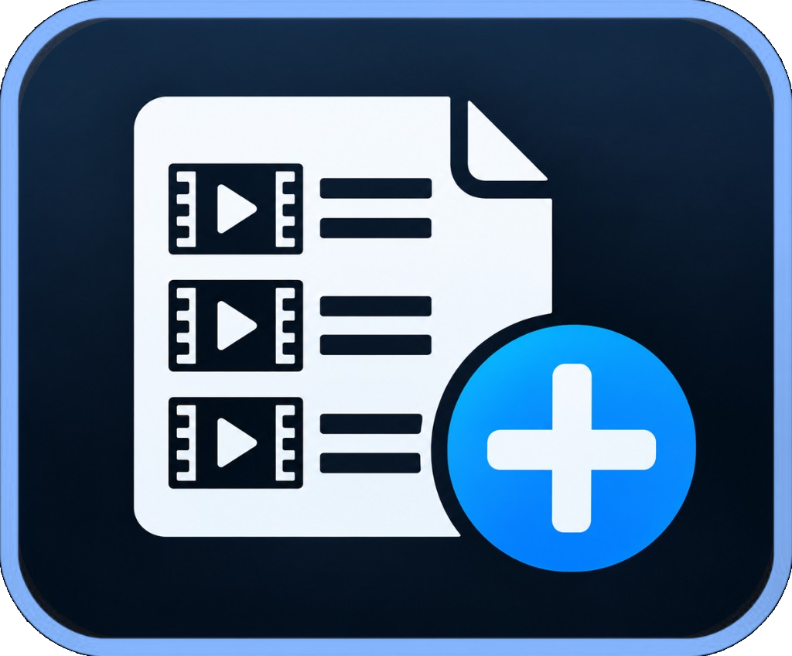
Clear everything and start an empty playlist
Alles löschen und eine leere Playlist anlegen
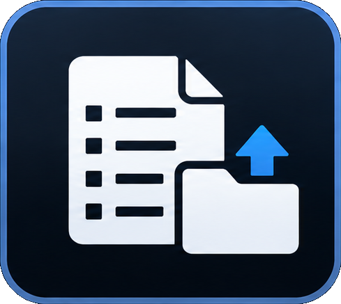
Load a playlist
Eine Playlist laden
Save the playlist
Die Playlist speichern
On import, the media directories list opens first, for quick access to the folders you use often.
Beim Import von Medien öffnet sich die Auswahl der Medienverzeichnisse, die einen schnellen Zugang zu den wichtigen Speicherorten ermöglichen.
You can import single files or whole folders.
Es lassen sich einzelne Dateien oder ganze Verzeichnisse in die Playlist importieren.
Under Settings → Playlist there are two options:
In den Einstellungen finden sich unter Einstellungen → Playlist zwei Optionen.
- Autosave: as soon as the program pointer jumps to a new entry, the playlist is saved. On a later day the list opens again at the last playback position.
- Automatisch speichern: Sobald der Programmzeiger im Ablauf auf einen neuen Eintrag springt, wird die Playlist gespeichert. An einem Folgetag steht die Playlist beim erneuten Laden automatisch an der Stelle der letzten Wiedergabe.
- Load last playlist: the last playlist is loaded automatically when Cinema Player starts.
- Letzte Playlist laden: Die letzte Playlist wird beim Start des Cinema Players automatisch geladen.
Playlist entries Playlist-Einträge
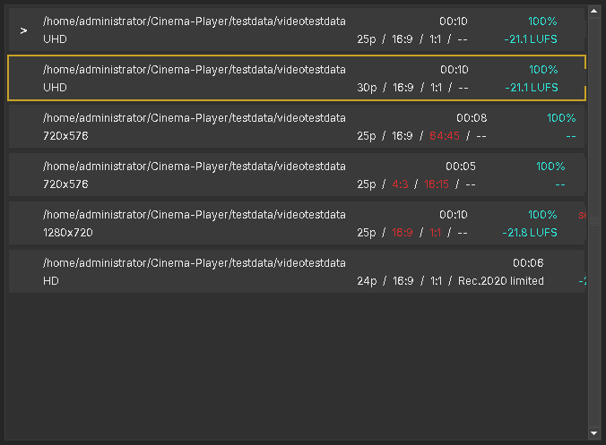
An arrow on the left marks the program pointer — that entry plays next. With the program started the row is filled blue. While the clip is on air it is green.
Ein Pfeil links vom Eintrag markiert den Programmzeiger. Dieser Eintrag wird als nächstes gespielt. Bei gestartetem Programm ist dieser Eintrag blau hinterlegt. Läuft der Film, ist er grün gekennzeichnet.
The entry loaded in the preview window has a yellow border.
Der Eintrag, der im Vorschaufenster geladen ist, wird gelb umrandet dargestellt.
Metadata Metadaten
- File name, with the folder underneath — or the media-directory name, when one is set
- Dateiname, darunter der Ordner — oder der Name des Medienverzeichnisses, wenn einer vergeben ist
- Duration
- Laufzeit
- Resolution — frame rate / aspect ratio / pixel aspect / colourspace
- Auflösung — Bildrate / Seitenverhältnis / Pixel-Seitenverhältnis / Farbraum
Audio Ton
- Volume
- Lautstärke
- Measured loudness (LUFS) via Settings → Playlist → Analyze loudness
- Berechneter Loudness-Wert (LUFS) unter Einstellungen → Playlist → Audioanalyse
Options Optionen
- AUTO — when the clip ends, the next clip starts automatically
- AUTO — nach Ablauf des Films wird der nächste Film automatisch gestartet
- LOOP — the clip repeats until Resume is pressed
- LOOP — der Film wird endlos in einer Schleife gespielt, bis Weiter gedrückt wird
- SETTING — if the projector setup must change, a warning appears before the clip starts
- SETTING — sind Änderungen an den Beamereinstellungen nötig, erscheint vor Start des Films ein Fenster mit einer Warnung
- LIGHT — house-light level at clip start (MEDIUM, BRIGHT). Dark is the default and is not labelled.
- LICHT — die Helligkeit des Saallichts beim Start des Films (MITTEL, HELL). Dunkel ist der Standardwert.
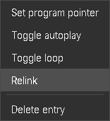
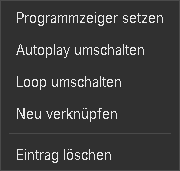
Set program pointer Programmzeiger setzen
After a clip ends, the pointer moves on by itself. This command sets it by hand. It is disabled during playback.
Der Zeiger, welcher Film als nächstes gespielt wird, springt nach dem Ende eines Films automatisch weiter. Mit dieser Funktion kann der Zeiger händisch gesetzt werden. Die Option ist während der Wiedergabe deaktiviert.
Toggle autoplay Autoplay umschalten
Turns autoplay on or off. With autoplay on, the next clip starts by itself. The same switch sits in the preview clip-settings row.
Die Autoplay-Funktion kann hier umgeschaltet werden. Bei aktivem Autoplay wird der nächste Film automatisch gestartet. Diese Umschaltmöglichkeit besteht auch im Block zum Programmablauf des Vorschaufensters.
Toggle loop Loop umschalten
Turns loop on or off. With loop on, the clip repeats until Resume ends it. The same switch sits in preview.
Die Loop-Funktion kann hier umgeschaltet werden. Bei aktivem Loop wird der Film endlos in einer Schleife gespielt, bis diese durch die Weiter-Taste beendet wird. Diese Umschaltmöglichkeit besteht auch im Block zum Programmablauf des Vorschaufensters.
Relink Neu verknüpfen
If the file is missing, the row turns red and the program skips it. Relink sets a new path.
Ist die Datei nicht auffindbar, wird der Playlist-Eintrag rot dargestellt und im Programmablauf übersprungen. Mit Neu verknüpfen kann der Pfad auf die Datei neu gesetzt werden.
To check every media path, use Settings → Playlist → Check video files.
Um zu überprüfen, ob alle Dateipfade zu den Mediendateien korrekt sind, in den Einstellungen Einstellungen → Playlist → Videodateien prüfen auswählen.
Delete entry Eintrag löschen
Removes the playlist entry.
Der Playlist-Eintrag wird gelöscht.
5. Program 5. Programmablauf
The running order is assembled in the playlist. Films and stills can be loaded one by one, or a whole folder imported. The program drives that order and can take on further control tasks.
Der Ablauf des Programms wird in der Playlist zusammengestellt. Es können Filme und Standbilder einzeln geladen oder ein gesamtes Verzeichnis importiert werden. Das Programm gibt den Ablauf vor und kann auch weitere Steuerungsaufgaben übernehmen.
The program status is shown at the top left. The modes are colour-coded.
Der Status des Programms wird links oben angezeigt. Die unterschiedlichen Modi unterscheiden sich farblich.
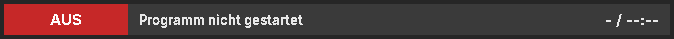
Until the program is started the screen stays black. Only in this state can functions such as loudness analysis or calibration run.
Solange das Programm nicht gestartet ist, bleibt die Leinwand schwarz. Nur in diesem Zustand können Funktionen wie die Tonanalyse oder die Kalibrierung vorgenommen werden.
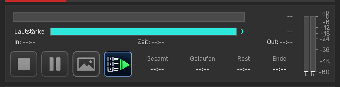
The program is begun with Start . The colour changes from red to blue, and the buttons for Stop and Resume become active.
Das Programm wird mit der Start-Taste begonnen. Die Farbe wechselt von rot auf blau und die Tasten für Stop und Weiter werden aktiviert.
The program is now armed. Functions that could disturb the show are disabled. Until a clip starts, or idle media is chosen, the screen stays dark.
Das Programm ist nun scharf geschaltet. Funktionen, die den Ablauf stören können, sind deaktiviert. Solange kein Film gestartet wird oder ein Pausenmedium ausgewählt ist, bleibt die Leinwand dunkel.
The program pointer in the playlist sits on the clip that plays next. Resume starts that clip.
Der Programmzeiger in der Playlist steht auf dem Film, der als nächstes gespielt wird. Der WEITER-Knopf startet diesen Film.
When the clip ends, the pointer jumps to the next entry. The picture stays black, or idle media is shown.
Nach Ablauf des Films springt der Programmzeiger auf den nächsten Eintrag. Das Bild bleibt schwarz oder es wird das Pausenmedium angezeigt.
Played entries are grey.
Die gespielten Einträge sind grau.
Idle media Pausenmedium
If idle media is chosen, it is shown on the screen while no film is playing.
Ist ein Pausenmedium gewählt, wird es auf der Leinwand angezeigt, solange kein Film läuft.
Idle media is a film or still shown instead of black. Films loop.
Ein Pausenmedium ist ein Film oder Standbild, das statt des Schwarzbildes gezeigt wird. Filme werden dabei in einer Endlosschleife gespielt.
Resume starts the next clip and ends the idle picture.
Wird der nächste Film mit WEITER gestartet, beendet dies die Anzeige des Pausenmediums.
Choose the file under Settings → Playlist → Idle media. There you can also set seconds of black between idle media and the start of a clip, and between the end of a clip and idle media again.
Das Pausenmedium kann in den Einstellungen unter Einstellungen → Playlist → Pausenmedium ausgewählt werden. Dort kann auch eine Zeit gewählt werden, in der zwischen dem Pausenmedium und dem Filmbeginn beziehungsweise dem Filmende und der erneuten Anzeige des Pausenmediums ein schwarzes Bild gezeigt wird.
If a file is set, its name appears in the playlist header.
Ist ein Medium ausgewählt, wird dies im Kopf der Playlist angezeigt.
Default. Settings can turn on Use default Idle Media. Then the file in the idle folder is used.
Standard. In den Einstellungen kann das Standard-Pausenmedium eingeschaltet werden. In dem Fall wird die Datei, die im Verzeichnis idle abgelegt ist, als Pausenmedium verwendet.
Stop and playback Stop
The program can be ended with Stop . That action must be confirmed, so the show is not dropped by accident.
Der Programmablauf kann mit Stop beendet werden. Diese Aktion muss bestätigt werden, um den Ablauf nicht irrtümlich zu beenden.
While a clip plays, the status bar is green. Current video and audio bitrates sit next to the progress bar. The meter shows the level after the volume fader.
Während ein Film wiedergegeben wird, ist die Statuszeile grün. Die aktuellen Datenraten für Video und Audio werden neben dem Fortschrittsbalken angezeigt. Die Lautstärke lässt sich in der Aussteuerungsanzeige ablesen. Die Anzeige zeigt den Wert nach dem Lautstärkeregler.
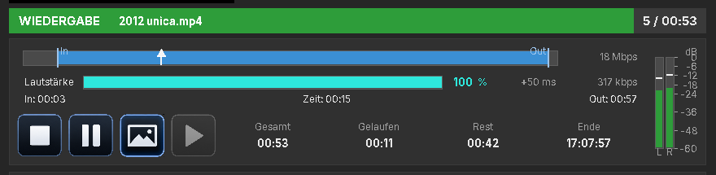
The buttons for Stop , Pause and Still are enabled. These actions must be confirmed so the show is not disturbed by accident.
Die Tasten für Stop , Pause und Still sind aktiviert. Diese Aktionen müssen bestätigt werden, um den Ablauf nicht irrtümlich zu stören.
Stop ends the clip; the program pointer jumps to the next entry
Stop beendet den Film, der Programmzeiger springt auf den nächsten Eintrag
Pause holds playback and shows a black frame
Pause hält die Wiedergabe an, es wird ein schwarzes Bild gezeigt
Still holds playback and freezes the current frame
Still hält die Wiedergabe an und zeigt ein Standbild
Resume continues from that position.
Mit Weiter wird die Wiedergabe an der Stelle fortgesetzt.
Scrubbing the progress bar is locked except in Still.
Die Navigation im Fortschrittsbalken ist außer im Still-Modus gesperrt.
In Still, the playhead can be dragged on the progress bar. The change is live on the screen. This is meant for seminars or talks where a film is shown and discussed interactively.
Im Still-Modus kann die Spielposition im Fortschrittsbalken mit der Maus verändert werden. Diese Änderung ist live auf der Leinwand zu sehen. Die Funktion ist für Seminare oder Vorträge gedacht, bei denen ein Film interaktiv gezeigt und besprochen wird.
6. Preview 6. Vorschau
The preview window shows every value for a clip. Settings made here are stored in the playlist and used in the program.
Im Vorschaufenster werden alle Daten zu einem Film angezeigt. Es können Einstellungen vorgenommen werden, die in der Playlist gespeichert und im Programmablauf genutzt werden.
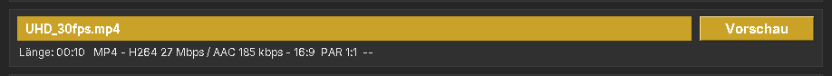
- Duration
- Lauflänge
- Container format
- Containerformat
- Video codec with bitrate
- Videocodec mit Datenrate
- Audio codec with bitrate
- Audiocodec mit Datenrate
- Picture aspect ratio
- Bild-Seitenverhältnis
- Pixel aspect ratio
- Pixel-Seitenverhältnis
- Colourspace
- Farbraum
The coloured button on the right switches between and (program armed) / (clip on air). In preview mode the video can be watched and set independently of the program. In Live, the picture follows the program nearly in sync.
Der farbige Knopf rechts schaltet zwischen und (Programmmodus) / (Film läuft) um. Im Vorschau-Modus kann das Video unabhängig vom Programm angesehen und eingestellt werden. Im Live-Modus wird das Bild aus dem Programm weitgehend synchron angezeigt.
- Autoplay — when the clip ends, the next clip starts automatically
- Autoplay — nach Ablauf des Films wird der nächste Film automatisch gestartet
- Settings warning — if the projector setup must change, a warning appears before the clip starts
- Einstellungswarnung — sind Änderungen an den Beamereinstellungen nötig, erscheint vor Start des Films ein Fenster mit einer Warnung
- Loop — the clip repeats until Resume is pressed
- Loop — der Film wird endlos in einer Schleife gespielt, bis Weiter gedrückt wird
- played — the played flag can be toggled; played clips are grey
- gespielt — der Status gespielt lässt sich umstellen; gespielte Filme werden grau dargestellt
- Dimmer — house-light level at clip start (Medium, Bright). Dark is the default.
- Dimmer — die Helligkeit des Lichts beim Start des Films (Mittel, Hell). Dunkel ist der Standardwert.
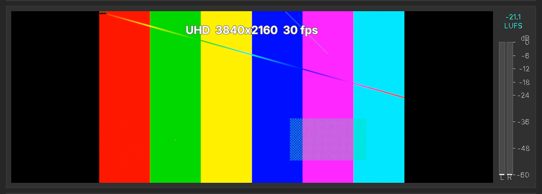
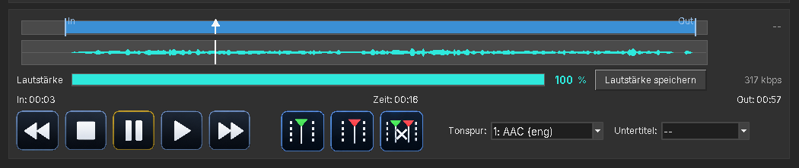
Volume Lautstärke
The audio bitrate is shown next to the volume slider.
Die Audio-Datenrate wird neben dem Lautstärkeregler angezeigt.
After loudness analysis, LUFS appears above the meter and an audio envelope under the progress bar.
Wurde die Audioanalyse aufgerufen, ist über der Aussteuerungsanzeige der Lautheitswert (LUFS) und unter dem Fortschrittsbalken eine Audio-Hüllkurve sichtbar.
Monitor-speaker volume can be set independently of the auditorium. Save volume writes the value into the playlist and uses it in the program.
Die Lautstärke der Tonwiedergabe am Monitor-Lautsprecher kann unabhängig von der Lautstärke im Kinosaal eingestellt werden. Mit Lautstärke speichern wird der Wert in der Playlist gespeichert und im Programm übernommen.
In Live, or when the clip on air is open in preview, Save volume applies the preview fader to the program at once. The auditorium level can jump. To change house volume immediately, use the program fader.
Im Live-Modus, oder wenn der gerade laufende Film in der Vorschau geöffnet ist, wird mit Lautstärke speichern die Lautstärkeeinstellung im Vorschaufenster sofort im Programm übernommen. Es kann daher zu einem Lautstärkesprung kommen. Muss die Lautstärke im Kinosaal sofort verändert werden, ist das durch den Regler im Programm möglich.
IN / OUT
Next to the transport buttons are In and Out. When they are set, the clip starts at In and ends at Out. That can hide a leader or a long black tail from the projection.
Neben den Transporttasten liegen die Tasten für die In- und Out-Punkte. Sind sie gesetzt, wird der Film am In-Punkt begonnen und am Out-Punkt beendet. Damit lässt sich ein Vorspann oder ein langer schwarzer Teil am Ende in der Projektion ausblenden.
In and Out are visible as a blue span on the program and preview progress bars.
Die In- und Out-Punkte sind im Fortschrittsbalken des Programms und der Vorschau durch einen blauen Balken sichtbar.
Set In and Out marks are applied at once, even while the program is running.
Gesetzte In- und Out-Punkte werden auch während des Programmablaufs sofort übernommen.
7. Remote control 7. Fernsteuerung
The program can be run from the auditorium on a smartphone or tablet. It needs a WLAN link between Cinema Player and the device.
Der Programmablauf kann über eine Fernsteuerung aus dem Zuschauerraum auf einem Smartphone oder Tablet erfolgen. Sie benötigt eine WLAN-Verbindung zwischen dem Cinema Player und dem Mobilgerät.
Settings are reached via the radio icon at the top right, or via Settings. Connection: scan the QR code. If that fails, type the shown IP address into a browser and enter the token in Cinema Player and in the browser.
Die Einstellungen sind über das Funk-Icon rechts oben oder die Einstellungen erreichbar. Die Verbindung wird hergestellt, indem der QR-Code gescannt wird. Sollte dies nicht funktionieren, wird die angezeigte IP-Adresse in einen Browser übernommen und ein Token im Feld des Cinema Players und des Browsers eingegeben.
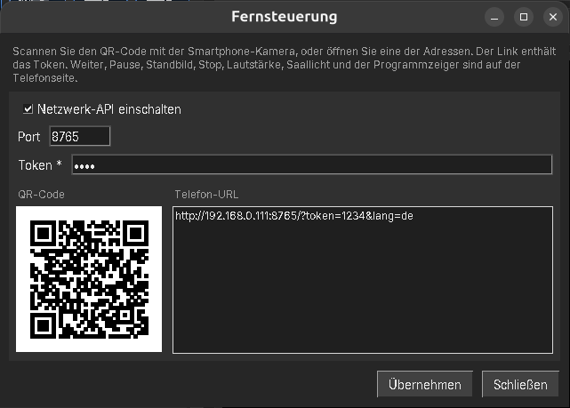
Phone page Fernsteuer-Oberfläche
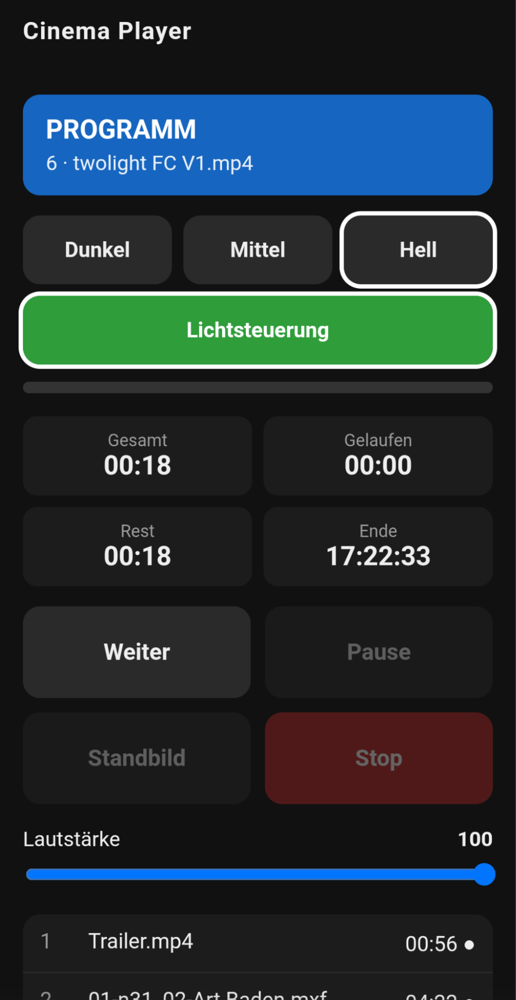
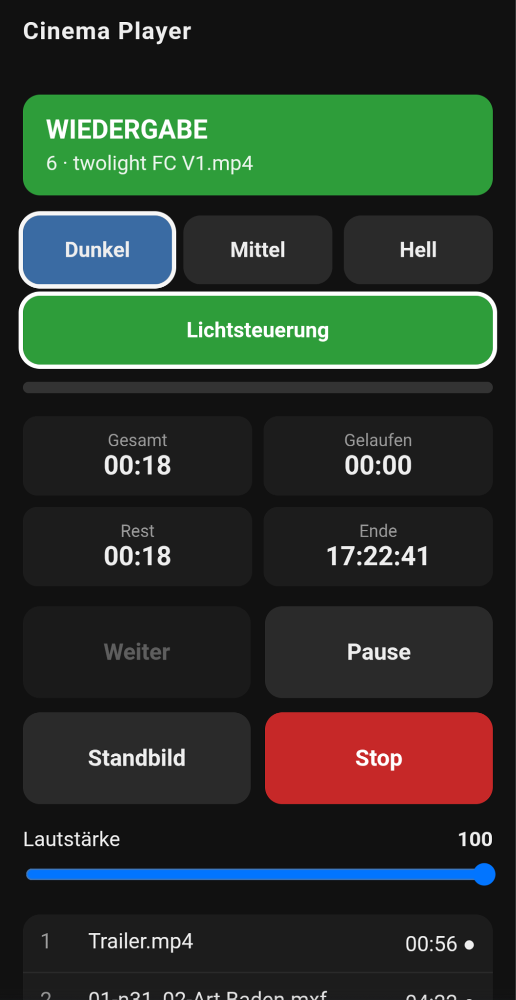
There are buttons for STOP, PAUSE, STILL and RESUME. Remaining and End are the large clocks. Lights, transport, and volume stay at the bottom while the playlist scrolls. The token field hides after the phone has connected. Transport needs the same confirmation as on the Cinema Player window.
Es gibt Tasten für die Transportfunktionen STOP, PAUSE, STILL und WEITER. Rest und Ende sind die großen Uhren. Licht, Transport und Lautstärke bleiben unten, während die Playlist scrollt. Das Token-Feld verschwindet, sobald das Telefon verbunden ist. Die Transporttasten erfordern die gleiche Bestätigung wie auf der Oberfläche des Cinema Players.
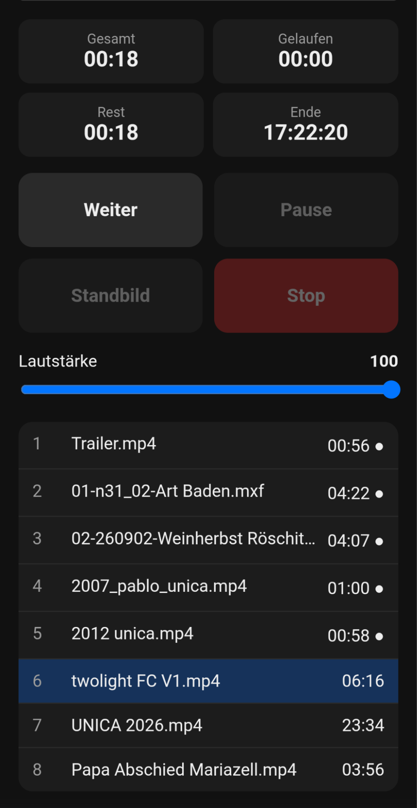
8. Light control 8. Lichtsteuerung
If house lights are driven over DMX, Cinema Player can take over the operation. Output is an Enttec DMX USB Pro, an Open DMX USB interface, or Art-Net on the LAN.
Wird das Saallicht über DMX gesteuert, kann die Bedienung vom Cinema Player übernommen werden. Die Ausgabe geht an ein Enttec DMX USB Pro, ein Open DMX USB oder per Art-Net ins Netzwerk.
Settings are reached via the bulb icon at the top right, or via Settings.
Die Einstellungen sind über das Lampen-Icon rechts oben oder die Einstellungen erreichbar.
DMX settings
DMX-Einstellungen
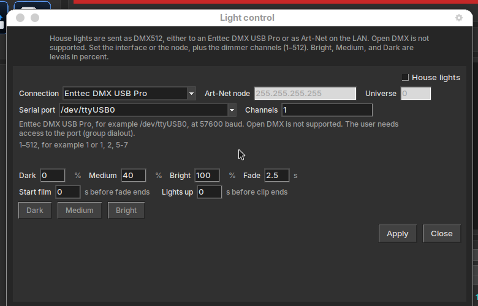
Choose Enttec DMX USB Pro and the serial port (for example /dev/ttyUSB0, 57600 baud), Open DMX USB on that same port (250000 baud, with a break before each frame), or Art-Net (LAN) with the node address and universe. Channels lists the dimmer slots, for example 1 or 1, 2, 5-7. If the interface is missing, playback continues and the window shows the error.
Enttec DMX USB Pro und die Schnittstelle wählen (zum Beispiel /dev/ttyUSB0, 57600 Baud), Open DMX USB an derselben Schnittstelle (250000 Baud, mit einem Break vor jedem Frame), oder Art-Net (LAN) mit Node-Adresse und Universe. Unter Kanäle stehen die Dimmer, zum Beispiel 1 oder 1, 2, 5-7. Fehlt das Interface, läuft die Wiedergabe weiter und das Fenster meldet den Fehler.
With light control on, house lights can be driven from Cinema Player and from the phone with
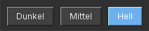
. The blue button shows the current state.Ist die Lichtsteuerung aktiviert, kann das Saallicht vom Cinema Player und der Fernsteuerung aus über die Tasten bedient werden. Die blaue Taste zeigt den Zustand an.
While a fade runs, the button blinks.
Während des Dimmvorgangs blinkt die Taste.
The program drives the lights. When a clip starts, the lights dim to dark. At the end of the clip they come up to bright.
Die Lichtsteuerung wird vom Programmablauf gesteuert. Wird ein Film gestartet, dimmt das Licht auf dunkel ab. Am Ende des Films läuft der Dimmer wieder auf Hell.
Fade is how long the dim from dark to bright (or the reverse) takes.
Die Dimmzeit gibt an, wie lange für den Dimmvorgang von dunkel zu hell oder umgekehrt benötigt wird.
Start film and Lights up are two values in seconds:
Mit den Werten Filmstart und Filmende können zwei Werte in Sekunden eingestellt werden.
- Start film — the clip starts this many seconds before the lights are fully dark
- Filmstart — der Film startet die angegebenen Sekunden, bevor das Licht ganz aus ist
- Lights up — the lights begin to come up this many seconds before the clip ends
- Filmende — das Licht beginnt die angegebenen Sekunden vor dem Filmende hell zu werden
Dimmer override Dimmer-Überschreibung
A clip can override the automatic dim. If Medium or Bright is chosen, the lights go to that level when the playlist entry starts. A clip can then run at full or half light — for example an interval insert.
In der Programmsteuerung eines Filmes kann das Standardverhalten der automatischen Dimmung überschrieben werden. Wird der Wert Mittel oder Hell gewählt, dimmt das Licht auf den gewählten Wert, sobald der Eintrag in der Playlist gestartet wurde. So kann ein Eintrag bei vollem oder halbem Licht laufen, zum Beispiel bei Zwischeninserts.
9. Settings 9. Einstellungen
All settings sit behind the three lines at the top right.
Alle Einstellungen sind über die drei Striche im rechten oberen Eck zugänglich.
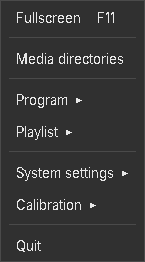
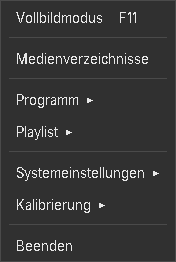
Fullscreen (recommended) Vollbildmodus (empfohlen)
The menu item Fullscreen or the shortcut F11 puts the Cinema Player window into fullscreen. The whole monitor is used for the booth, and unused window chrome is hidden.
Mit dem Menüpunkt Vollbildmodus oder dem Shortcut F11 wird das Fenster des Cinema Players im Vollbildmodus dargestellt. Es wird die gesamte Fläche des Monitors für die Bedienung genutzt und die nicht benötigten Fensterelemente ausgeblendet.
Media directories Medienverzeichnisse
Folders you use often can be saved as media directories. When films or stills are imported, those folders are offered first and can be opened directly. The following file dialog can still navigate elsewhere.
Oft genutzte Speicherorte können als Medienverzeichnisse gespeichert werden. Beim Import von Filmen oder Bildern erscheint zuerst eine Auswahl der gespeicherten Medienverzeichnisse, die dann direkt geöffnet werden. In der folgenden Dateiauswahl kann auch zu anderen Verzeichnissen navigiert werden.
Each folder can have its own name. The playlist then shows that name instead of the path, next to the file name. Folders inside the named directory stay visible after the name.
Jedem Ordner kann ein eigener Name gegeben werden. Die Playlist zeigt dann diesen Namen statt des Pfads, zusammen mit dem Dateinamen. Unterordner innerhalb des benannten Verzeichnisses bleiben hinter dem Namen sichtbar.
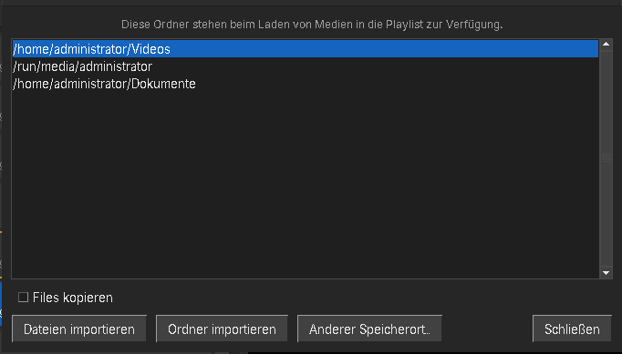
By default the media files are only linked in the playlist. The data stays on the source drive and is played from there.
Im Normalfall werden die Mediendateien nur in der Timeline verlinkt. Die Daten bleiben am Transportmedium und werden von dort abgespielt.
If Copy files is ticked at the bottom, files are not only linked but copied into the folder chosen to the right of the tick.
Wird am unteren Rand ein Haken bei Datei kopieren gesetzt, werden die Dateien nicht nur verlinkt, sondern in das Verzeichnis kopiert, das rechts vom Haken gewählt werden kann.
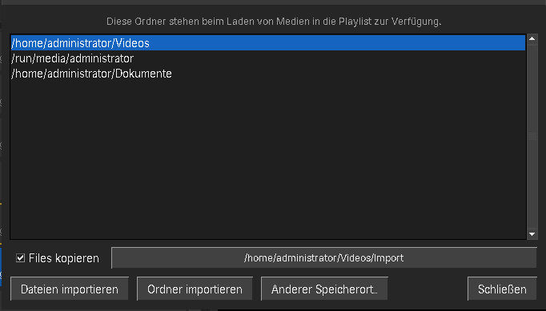
The original medium can then be removed and the program uses the copies. That simplifies shows where films arrive on different drives, and it avoids playback problems from slow USB sticks.
Damit kann das originale Speichermedium entfernt werden und das Programm nutzt die Kopien. So vereinfacht sich der Ablauf, wenn die Filme auf unterschiedlichen Medien geliefert werden. Damit lassen sich auch Abspielprobleme, zum Beispiel durch langsame USB-Sticks, vermeiden.
Program Programm
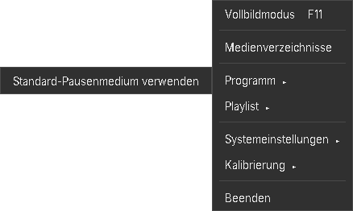
When this is on, the media (film / still) in the idle folder is always used as idle media.
Ist die Funktion ausgewählt, wird das Medium (Film / Bild) aus dem idle-Verzeichnis immer als Pausenmedium genutzt.
Playlist Playlist
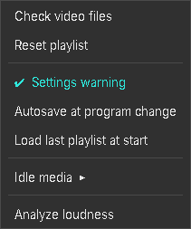
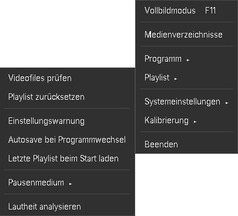
System settings Systemsteuerung
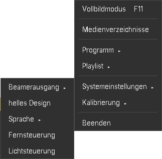
Text size (under Language) steps the control-window type from A−− to A++. The choice is saved and applied again at the next start.
Schriftgröße (unter Sprache) stellt die Schrift im Kontrollfenster von A−− bis A++. Die Wahl wird gespeichert und beim nächsten Start wieder angewendet.
Patch connects the Beamer and Preview players to an output. Beamer picture is a connected display (the same choice as Beamer output; it cannot change while the program is PLAYING). Preview picture stays in the control window. Sound lists the output devices mpv can open. Automatic sends Beamer sound to the projector and Preview sound to the booth. Off disconnects that player. The patch is saved.
Patch verbindet die Player Beamer und Vorschau mit einem Ausgang. Das Beamer-Bild ist ein angeschlossener Bildschirm (dieselbe Wahl wie Beamerausgang; sie ist während WIEDERGABE gesperrt). Das Vorschaubild bleibt im Kontrollfenster. Ton listet die Ausgabegeräte, die mpv öffnen kann. Automatisch legt den Beamer-Ton auf den Projektor und den Vorschau-Ton in den Vorführraum. Aus trennt diesen Player. Die Verbindung wird gespeichert.
Calibration Kalibrierung
Test videos ship with Cinema Player. They live in the testdata folder and can be loaded from here.
Für den Kalibriervorgang werden Testvideos mit dem Cinema Player geliefert. Sie sind im Verzeichnis testdata abgelegt und können hier einfach geladen werden.
Choosing a calibration switches the player into calibration mode, marked purple.
Wird eine Kalibrierung ausgewählt, schaltet der Player in den Kalibriermodus, der lila markiert ist.
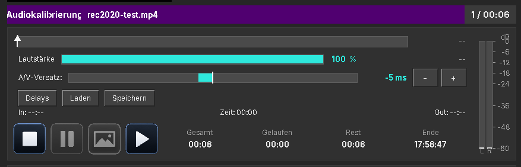
Load all files puts every test clip from the matching testdata folder into the playlist.
Alle Files laden lädt die gesamten Testvideos aus dem entsprechenden testdata-Verzeichnis in die Playlist.
Playlists in that testdata folder appear below. Complete calibration procedures with instructions can be loaded that way.
Sind Playlists im testdata-Verzeichnis abgelegt, erscheinen sie darunter. Damit können vollständige Kalibriervorgänge mit Anleitungen geladen werden.
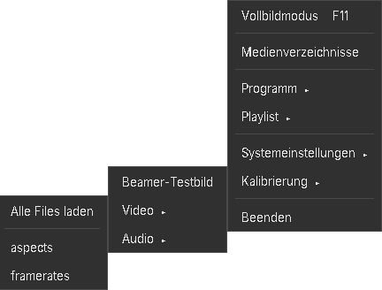
Audio calibration Audiokalibrierung
Calibration of picture–sound offset for each resolution / frame-rate combination. Under the program volume slider an extra slider for A/V delay appears. Save stores the measured values so they can be loaded later. The values apply to the whole playlist.
Kalibrierung des Ton-Bild-Versatzes für jede Auflösungs-/Bildraten-Kombination. Unter dem Lautstärkeregler im Programm erscheint ein zusätzlicher Regler für den Bild-Ton-Versatz. Mit Speichern werden die Messwerte abgelegt und können später wieder geladen werden. Die Werte gelten für die gesamte Playlist.
A meter that sets the offset automatically to 1 millisecond is in development. Calibration should then run fully automatically.
Ein Messgerät, das den Versatz auf 1 Millisekunde genau automatisch einstellt, ist in Entwicklung. Die Kalibrierung soll dann vollautomatisch erfolgen.
Video calibration Videokalibrierung
Colour calibration with a probe and loading the profile into the graphics card (currently a proof of concept).
Farbkalibrierung mit einem Farbmesskopf und Übernahme des Farbprofils in die Grafikkarte (derzeit Proof of Concept).
Quit Beenden
The program can only be quit when the running order is stopped.
Das Programm kann nur beendet werden, wenn der Programmablauf gestoppt ist.
10. Technical notes 10. Technik
Hardware Hardware
PC with Linux (X11, Wayland).
PC mit Linux (X11, Wayland).
Graphics card: AMD, Intel (Nvidia not recommended).
Grafikkarte: AMD, Intel (Nvidia nicht empfohlen).
Software Software
The Cinema Player package includes an installer that sets up the important libraries. With an Nvidia card the proprietary graphics driver must be installed by hand.
Das Cinema-Player-Softwarepaket bringt einen Installer mit, der die wichtigen Bibliotheken installiert. Im Fall einer Nvidia-Grafikkarte muss der proprietäre Grafiktreiber händisch installiert werden.
AMD and Intel graphics cards have not been tested yet.
AMD- und Intel-Grafikkarten sind bisher noch ungetestet.